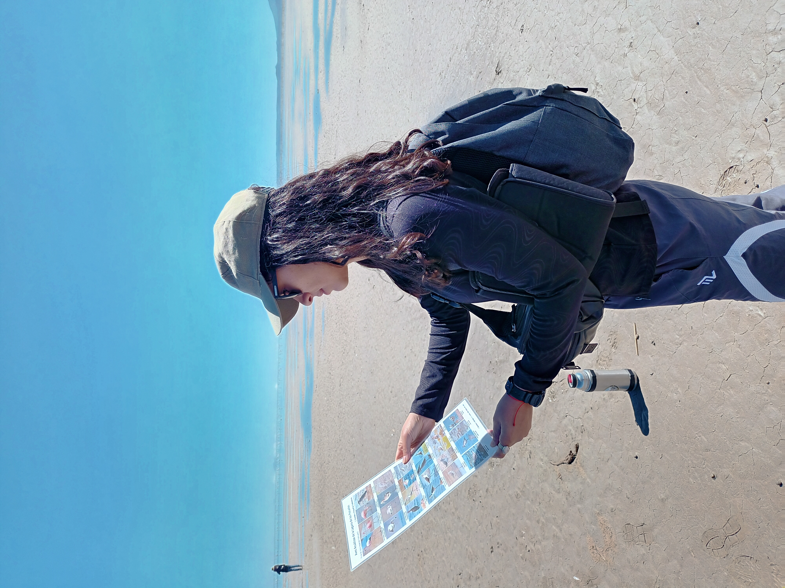

Monitoreo de aves en humedales altoandinos
Los humedales de la región de la puna constituyen ecosistemas clave para la conservación de la biodiversidad y el sustento de las comunidades de altura. A pesar de su relevancia ecológica y social, aún persisten importantes vacíos en el conocimiento sobre los procesos fundamentales que regulan su funcionamiento.